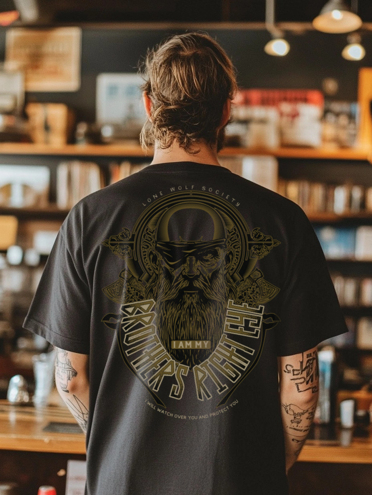
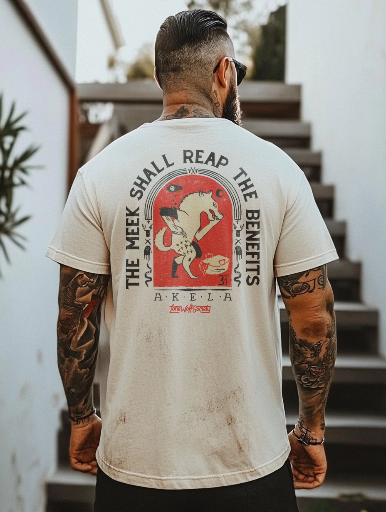
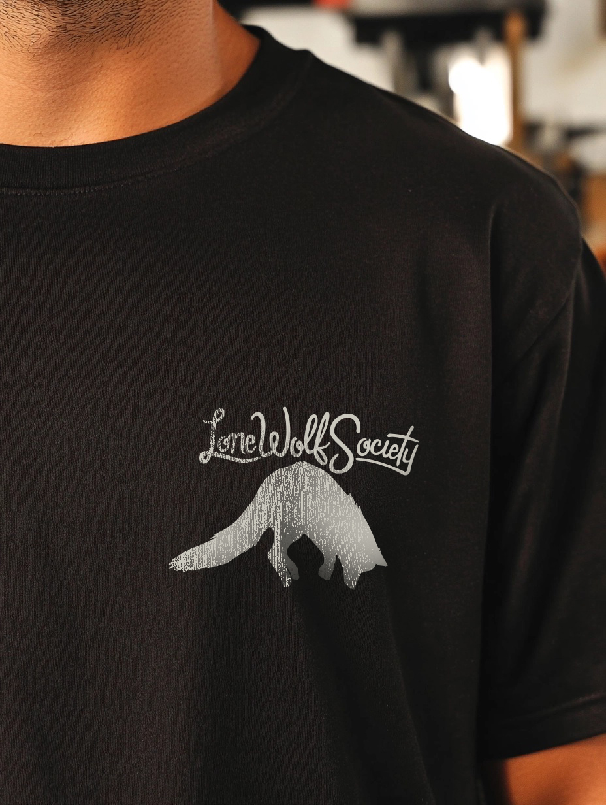
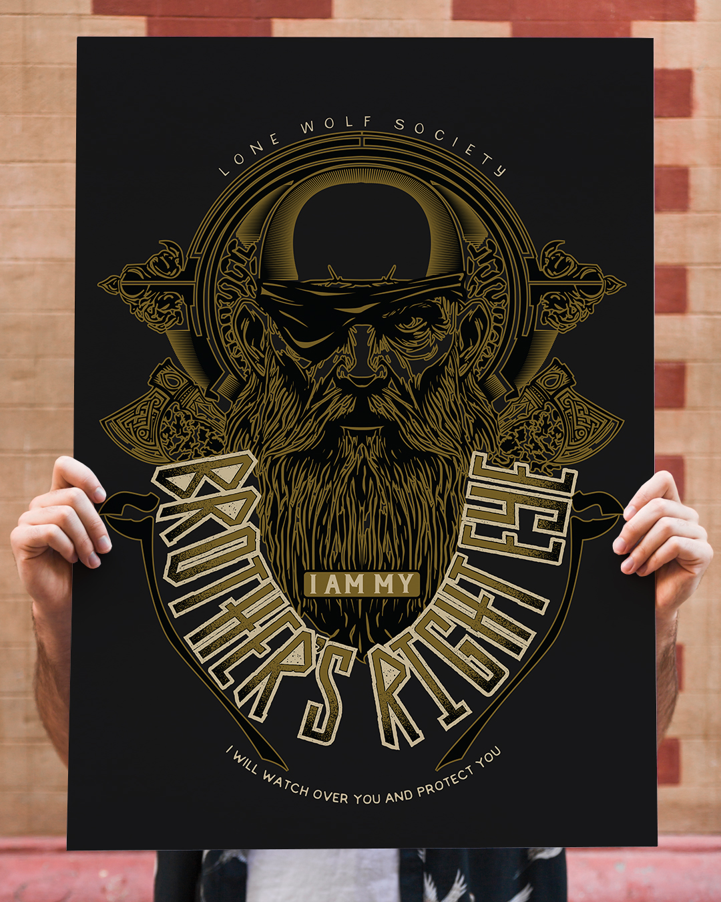
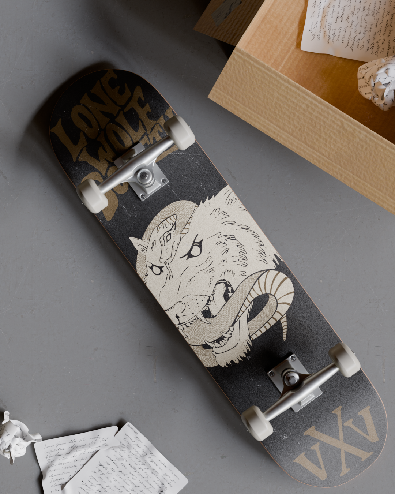
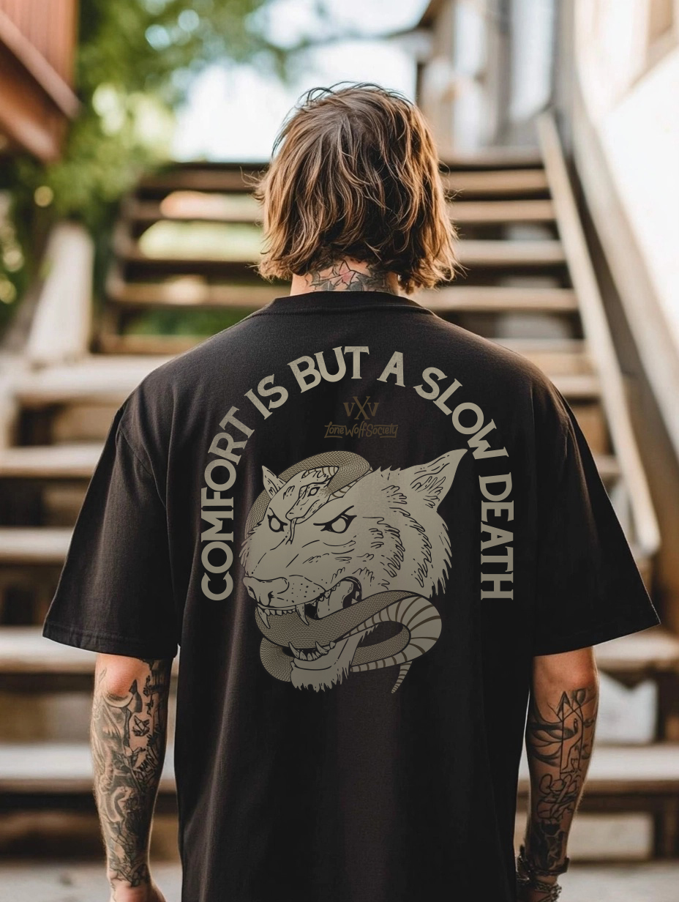
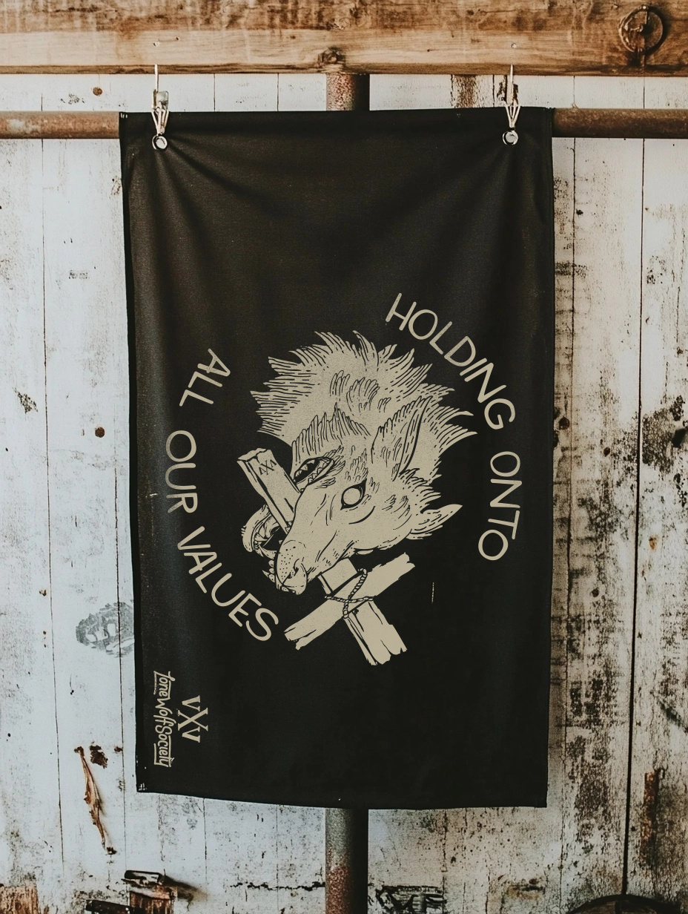
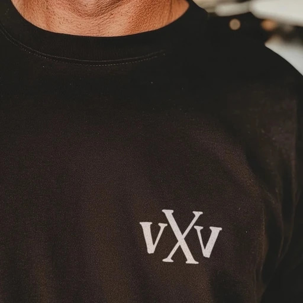
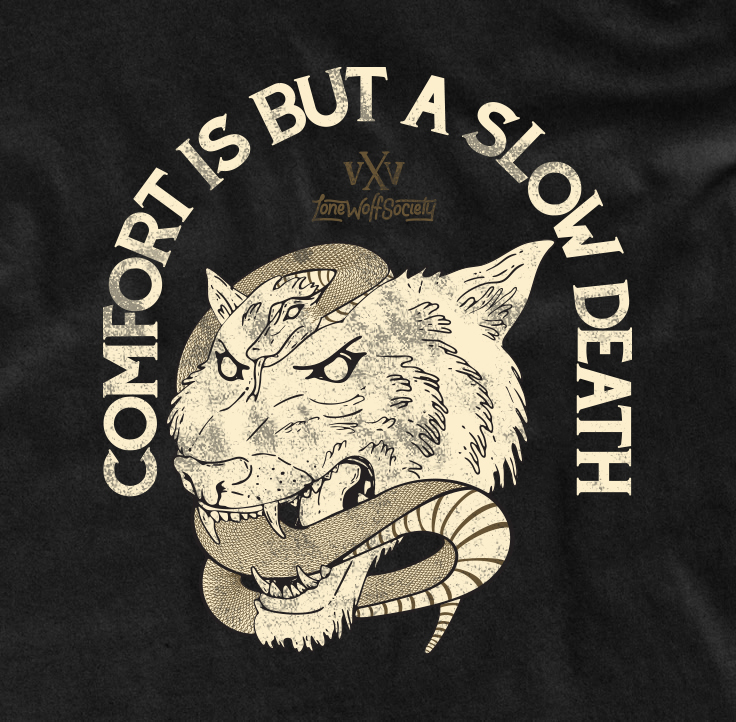
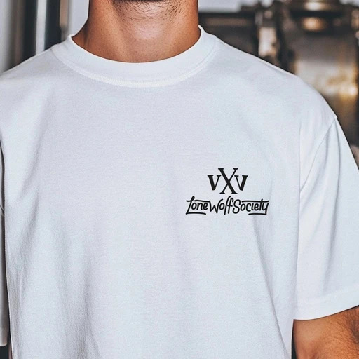

Previous Work
Independent Apparel & Art Brand
Lone Wolf Society is an independent apparel and art brand I created to explore a distinct visual voice rooted in hard work, alternative culture, and traditional design.
I developed the brand from the ground up, including identity, product design, and a range of physical and digital assets—spanning apparel, prints, and custom accessories.
The visual direction draws from street culture, stoic philosophy, and vintage typography, with an emphasis on distressed, hand-crafted techniques to create a raw, one-of-a-kind aesthetic across all products.
The result is a brand that feels tactile, expressive, and intentionally imperfect. Designed to stand apart in a space often driven by trends.
If you want to effect people deeply, you have to tell the truth.









